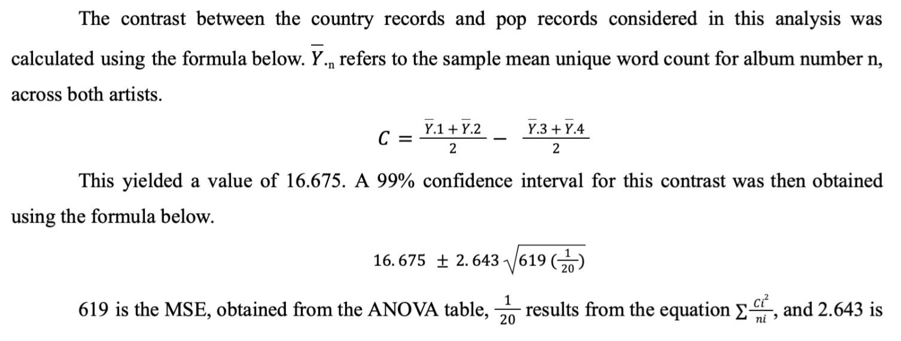
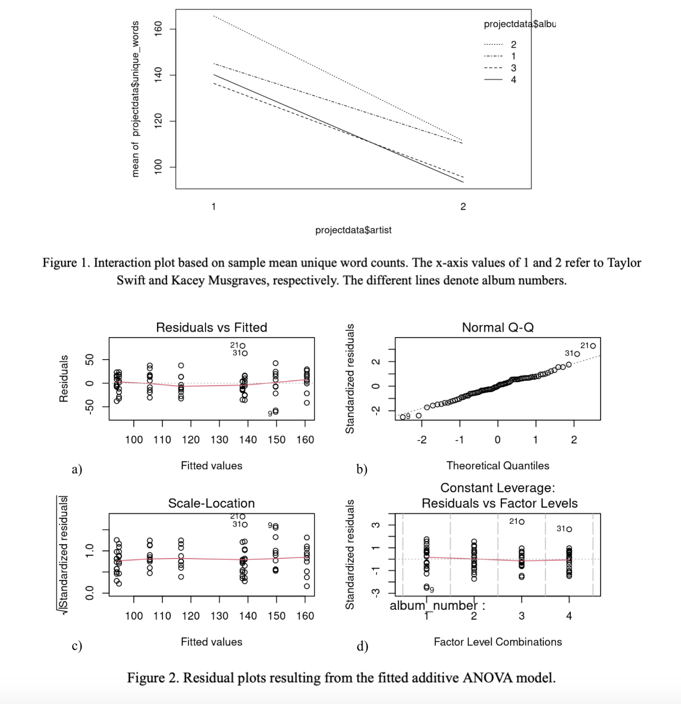

Taylor Swift and Kacey Musgraves Lyrical Analysis
Analyzing the progression of unique word counts in Taylor Swift and Kacey Musgraves albums as they transitioned from country to pop music
Introduction
The release of her 10th album Midnights and the announcement of her long-awaited Eras Tour made Taylor Swift one of the most streamed and discussed music artists in 2022. Through the years Swift has experimented with different genres, and although she is now predominantly known as a pop artist, her career originated from country music. Sloan (2021) points out a ‘key inflection point in [Swift’s] career’; although she ‘had been moving towards a pop sound since 2012’s Red’, Swift ‘repositioned herself from a country star to a pop star with the release of 2014’s 1989’ [Sloan (2021)]. Kacey Musgraves is another example of an artist with strong country roots who transitioned to pop during her career. While her genre transition was not as radical as Swift’s, Musgraves was classified by the Recording Academy as a pop artist with the release of her 2021 album star-crossed, which featured in the pop vocal album category for the 2022 Grammy Awards. Although she has not achieved the level of fame Swift has, Musgraves has ‘continually earn[ed] critical praise and even scored two Grammy awards for her debut album’ (Smith 2016). Despite both artists’ success, country music remains a male-dominated space, with Swift being ‘the last female artist to have her first two singles reach the Top 10 on Billboard’s Hot Country Songs chart […] all the way back in 2007’ (Smith 2016). This may have influenced both Musgraves’ and Swift’s decision to shift genres from country to pop during their careers.
One of the key differences between country and pop music is songwriting structure, specifically in the chorus. As Neal (2007) explains, since the 1980s country music has been built on the ‘Time-Shift paradigm’, which features the ‘presence of a verse-chorus song form […] a sequence of verses that center on the multi-generational life-cycle and attention to family in chronologically distinct episodes […] a reinterpretation of the chorus’s text and meaning in each iteration’ (Neal 2007). Sloan (2021) writes that in such music ‘the lyrical material of the chorus shifts over each appearance’ while ‘most pop songs repeat the exact same chorus for each appearance of the section’ (Sloan 2021). While Swift’s first three albums used the Time-Shift paradigm, her fourth album Red left it behind: Sloan (2021) cites I Knew You Were Trouble (Red), with its chorus repeating identically each time, as exemplifying ‘the stasis of pop form’ (Sloan 2021). Thus, due to these structural differences, we would expect country songs to be less repetitive than pop songs, and consequently to have a higher number of unique words - a tally where repeating words are counted only once.
In this analysis, we will look at four albums from each artist. These albums are, chronologically, Swift’s Fearless, Speak Now, Red and 1989, and Musgraves’ Same Trailer, Different Park, Pageant Material, Golden Hour, and star-crossed. Each artist’s earlier two albums will be classified as country while the latter two will be classified as pop. We will seek to determine whether Swift’s and Musgraves’ country songs have a higher unique word count than their pop songs. Additionally, we will determine whether there are differences in unique word count between the two artists. It is without a doubt that Swift has been the more successful artist, with her second album Fearless amassing more Spotify streams than all four of Musgraves’ albums combined (Spotify 2023). While there are many factors influencing artist success and personal music preference, there is a view that ‘some songs are structurally and aesthetically “better” than others and are therefore preferred’ (Boyle, Hosterman, and Ramsey 1981). Could songwriting structure, more specifically unique word count, contribute to this aesthetic superiority that leads to success?
Methods
The albums for this analysis were chosen such that two country and two pop albums were considered for each artist. Only four albums were considered for each artist as this is the number of records that Musgraves has released, excluding Christmas albums. Additionally, Swift’s 2006 self-titled album was not considered. If this album had been included, either Fearless or Speak Now would have had to be omitted, despite being newer albums, in order to keep a balanced design with two country and two pop albums. This would result in a dataset consisting of albums that were not released consecutively, which would not provide the most accurate representation of Swift’s career trajectory. Thus, Swift’s self-titled album was omitted from this analysis. For the purposes of this study, the albums will be numbered as follows: Fearless and Same Trailer, Different Park (album 1, country), Speak Now and Pageant Material (album 2, country), Red and Golden Hour (album 3, pop), and finally 1989 and star-crossed (album 4, pop).
Ten songs were randomly selected from each album using the ‘sample.int’ function in RStudio. This resulted in a total of 80 songs, with each one constituting an observation in the dataset. Lyrics were then obtained from azlyrics.com and the unique word count for each song was determined using the ‘length’, ‘strsplit’ and ‘unique’ functions in RStudio (AZLyrics 2023). Unique word count requires that repeating words be counted only once, which gives an indication of how varied a song’s lyrics are. The two factors for this two-way ANOVA are artist and album number, with the response variable being a song’s unique word count.
A key assumption for ANOVA is that the errors are independent and identically distributed. Although the songs for each album were randomly sampled (identical distribution), and knowing the unique word count of one song does not give an indication of the unique word count of another song (independence), it must be noted that we are making the assumption that the songs in each album constitute an infinite population. This is not the case, as there is a finite number of songs in each album and a finite number of songs written by an artist at each stage of her career. This consequently limits the real-world applications of the inference that this dataset allows us to do.
Data Analysis
First, it was necessary to determine whether an additive or an interactive model would be suitable for the dataset. Visualization of an interaction plot (Figure 1) indicated the possibility of an interaction between the factors of artist and album number as the lines were not parallel. As a result, an ANOVA for an interactive model was fitted. While artist and album number were individually significant, the interaction term was insignificant (p-value 0.64867), and so this model was abandoned. The lines in the interaction plot are based on means for the sample rather than on the true population means, which explains why they did not appear parallel despite no significant interaction being present.
Consequently, an additive model consisting of the two factors of artist and album number was fitted instead. Verification of the residual plots for this model showed that the ANOVA assumptions were satisfied. The relatively straight horizontal red lines in the Residuals vs. Fitted plot (Figure 2a) and in the Scale-Location plot (Figure 2c) show that homoskedasticity holds. Inspection of the Normal Q-Q plot (Figure 2b) suggests normality of the residuals, but this was checked more rigorously using a Shapiro-Wilk test. This yielded a p-value of 0.2784, indicating that it is unlikely that the residuals were not normally distributed. As the assumptions were reasonably fulfilled, the additive model was deemed suitable and was used for inference.
The ANOVA table for this model showed the presence of a clear artist effect, with Taylor Swift using a higher number of unique words than Kacey Musgraves, regardless of the album (p-value 1.684 x 10-11). There was also an album effect, although more subtle than the artist effect (p-value 0.01642). The interaction plot (Figure 1) showed that both artists used more unique words on average in their first and second albums compared to their third and fourth albums, while their second albums contained the highest average unique word count out of the four. On average, Swift had more unique words in her fourth album than her third, while the opposite was true for Musgraves. Further tests were carried out to obtain greater insight on differences in unique word count between albums and between artists. These tests consisted of six album pairwise differences, one artist pairwise difference, and one contrast between country and pop albums.To account for multiple testing, the overall ⍺ level of 0.05 was divided among these tests using Bonferroni’s Inequality. An adjusted ⍺ value of 0.03 was allocated to the album pairwise differences as there were six of them, while an ⍺ value of 0.01 was allocated to both the artist pairwise difference and the genre contrast.
The pairwise differences were determined via a Tukey multiple comparisons of means test, with a family-wise confidence level of 97% for album number and 99% for artist. With regards to album number, the only significant difference was between albums 3 and 2 (adjusted p-value 0.0271). The 97% confidence interval for this difference had a lower bound of -44.8 and an upper bound of -0.3. This means that we are 97% confident that a song on Golden Hour or Red will have between 44.8 and 0.3 fewer unique words than a song on Pageant Material or Speak Now. Additionally, the artist pairwise difference was very significant (adjusted p-value 0). The 99% confidence interval for this difference had a lower bound of -58.78 and upper bound of -29.37, meaning that we are 99% confident that a Kacey Musgraves song from any of her non-Christmas albums will have between 29.37 and 58.78 fewer unique words than a song from Taylor Swift’s Fearless, Speak Now, Red or 1989.

the t-multiplier obtained using qt(0.005, 75) in RStudio. 75 refers to the degrees of freedom and 0.005 results from halving the adjusted significance level of 0.01 to cover both tails of the distribution. This yielded an upper bound for the confidence interval of 31.38 and a lower bound of 1.97. While this interval is large, it does not include 0. This allows us to say with 99% confidence that, indeed, Musgraves’ and Swift’s country albums differ significantly from their pop albums in terms of unique word count.

Conclusion
The purpose of this study was twofold: to determine whether there is a difference in unique word count between the country and pop albums of Taylor Swift and Kacey Musgraves, and whether there is a difference in unique word count between these two artists. After an initial interactive ANOVA model was deemed unsuitable, an additive model was fitted. Evaluation of residual plots considered the additive model appropriate as it did not violate ANOVA assumptions. This additive fit showed both an artist and an album number effect. Tukey pairwise comparisons of means were carried out to obtain greater insight on these factor effects. It was found that, in the albums considered, Swift’s songs had an extremely significantly higher unique word count than Musgraves’ songs, with the 99% confidence interval for this difference ranging between 29.37 and 58.78 unique words. This artist effect speaks to the different songwriting styles of the two artists and indicates that Swift uses more variety in her lyrics than Musgraves. While there are many aspects that contribute to an artist’s success, this could provide some insight as to why Swift’s music has been more critically acclaimed (12 Grammys compared to Musgraves’ 6) and more streamed by the public (84 million monthly listeners on Spotify compared to Musgraves’ 6.5 million) (The Recording Academy 2023) (Spotify 2023).
The only significant album pairwise difference identified was between albums 3 and 2, which corresponds to the difference between each artist’s first pop record and her last country record. This difference was negative, indicating that both artists used fewer unique words in their first pop record than in their last country record. Perhaps more insightful is the contrast calculated between country and pop albums across both artists. It was found that, with 99% confidence, a song on country records Fearless, Speak Now, Same Trailer, Different Park or Pageant Material, will have between 31.38 and 1.97 more unique words than a song on pop records Red, 1989, Golden Hour or star-crossed. This genre difference in unique words agrees with Neal’s (2007) description of the Time-Shift paradigm and is aptly summarized by Sloan (2021): ‘As she moved out of the world of country, Swift shifted her formal language away from the transformative narratives of country to the static emotional tension of pop’ (Neal 2007) (Sloan 2021).
A limitation of this study is the assumption that the observations came from an infinite population, which is not the case. Each album only contains between 12 and 20 songs, and each artist wrote a finite number of songs at each stage in her career, including the ones that did not make it onto an album. The nature of the data therefore limits the scope of the inference that we are able to carry out. Additionally, there is variability in song length that could influence the number of unique words in a song regardless of its genre. Thus, this analysis could be improved by changing the response variable to unique words per minute. Lastly, our analysis could also be improved by increasing the number of songs analyzed, but this is simply not realistic as Musgraves only has 4 albums, each with 15 songs or less. Of course, only two artists were considered in this analysis. It would be of interest to consider other artists who followed a similar trajectory from country to pop, consequently adding more levels to the artist factor. These could include male artists, allowing us to determine whether there is a sex difference in the number of unique words used in songs.